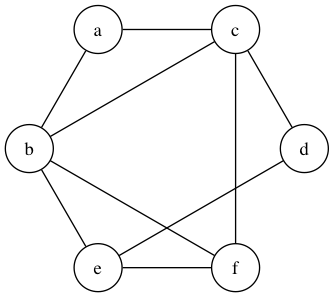
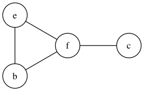
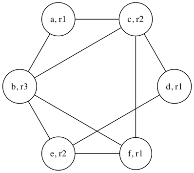

Liveness Analysis, Linear Scan
1 Liveness Analysis
- Optimization
- Registers are faster than main memory
- Registers small finite set, locals larger finite sets
- Mapping from locals
The Golden Rule
A variable
vis live on edgeeif there is a directed path frometo a use ofvthat does not pass through any assignment tovexample
- legend:
- live in and out:
| - live in
˙ - live out
.
- live in and out:
i L1: i = 1 . L2: y = i + 2 | L3: if y > 10 then goto L9 | L4: b = y + 3 | L5: if i > 20 goto L7 | L6: i = i + 1 | L7: b = b + i | L8: goto L2 | <- why is this live out? L9: y = b + 4 L10: return yi y L1: i = 1 . L2: y = i + 2 | . L3: if y > 10 then goto L9 | | L4: b = y + 3 | ˙ <- why? What about L8? L5: if i > 20 goto L7 | L6: i = i + 1 | L7: b = b + i | L8: goto L2 | L9: y = b + 4 . <- why? L10: return y ˙ <- why?i y b L1: i = 1 . | <- what? L2: y = i + 2 | . | <- why? L3: if y > 10 then goto L9 | | | <- when? how? L4: b = y + 3 | | . <- why isn't b live-in? L5: if i > 20 goto L7 | | L6: i = i + 1 | | L7: b = b + i | | L8: goto L2 | | L9: y = b + 4 . ˙ L10: return y ˙- legend:
- Exam questions (F12) example from above,
- which variables are live along edges into L1
b!bcan be read at L9 without an assignment!
- which variables are live along edges into L1
2 Linear Scan
- Question from piazza
In the paper's model is
dlive at node 4? (Note, there is a critical difference between live at the nodes and live on an edge) example
a b c d e f a = 1 . b = 2 | . c = a + b | ˙ . d = a + c ˙ | . e = c + d ˙ | . f = d + 3 ˙ | . b = e + 4 . | | c = b + e | . ˙ | f = b + f | | | b = c + f | ˙ ˙ return b + 5 ˙Extend the live ranges:
a b c d e f a = 1 . b = 2 | . c = a + b | | . d = a + c ˙ | | . e = c + d | | | . f = d + 3 | | ˙ | . b = e + 4 | | | | c = b + e | | ˙ | f = b + f | | | b = c + f | ˙ ˙ return b + 5 ˙iterations of linear scan for two registers,
R = {r1, r2}with the active sequenceA = <>and the mapping of variablesM = {}- live interval for
a- expire old intervals does nothing
|A| < |R|M = {a -> r1}A = <a>
- live interval for
b- expire old intervals does nothing
|A| < |R|M = {a -> r1, b -> r2}A = <a, b>
- live interval for
c- expire old intervals does nothing
|A| = |R|- spill chooses last interval
b b's endpoint is further thanc'sbspills!- remove
bfrom active,A = <a, c> ctakes the registerM = {a -> r1, c -> r2}A = <a, c>
- live interval for
d- expire old interval removes
afromA |A| < |R|M = {d -> r1, c -> r2}- Why
r1?
- Why
A = <c, d>
- expire old interval removes
- live interval for
e- expire old intervals does nothing
- spill chooses last interval
c c's endpoint is further thane'scspills!- remove
cfrom active,A = <d> etakes the registerM = {d -> r1, e -> r2}A = <d, e>
- live interval for
e- expire old interval removes
dfromA,A = <e> |A| < |R|M = {e -> r2, f -> r1}A = <e, f>
- expire old interval removes
a b c d e f r1a = 1 . b = 2 | . c = r1a + b | | . r1d = r1a + c ˙ | | . r2e = c + r1d | | | . r1f = r1d + 3 | | ˙ | . b = r2e + 4 | | | | c = b + r2e | | ˙ | r1f = b + r1f | | | b = c + r1f | ˙ ˙ return b + 5 ˙- live interval for
What is the pathological case for linear scan?
a b c d a = 1 . b = a + 1 | . c = b + 1 | | . d = c + 1 | | | . a = d + 1 | | | | b = a + 1 ˙ | | | c = b + 1 ˙ | | d = c + 1 ˙ | return d ˙- How many registers are actually required? (1)
- How many variables will spill? (4 - #regs)
3 Graph coloring
- K-coloring
example, where K = 3
a b c d e f a = 1 . b = 2 | . c = a + b | ˙ . d = a + c ˙ | . e = c + d ˙ | . f = d + 3 ˙ | . b = e + 4 . | | c = b + e | . ˙ | f = b + f | | | b = c + f | ˙ ˙ return b + 5 ˙
- remove all nodes that have less than K neighbors (3), put them onto a stack
- after removing nodes check to see if more nodes can be removed
- Heuristic algo, steps
remove
aandd,stack = <d, a>(top of the stack is to the left)
- remove
c,stack = <c, d, a> - dump the rest (order doesn't matter),
stack = <f, e, b, c, d, a> start popping and choose colors/registers under constraints
f = r1e = r2b = r3c = r2d = r1a = r1

- What happens if can't keep removing nodes? (e.g.
k = 2)- proceed as normal, spill with a very connected nodes when you can't